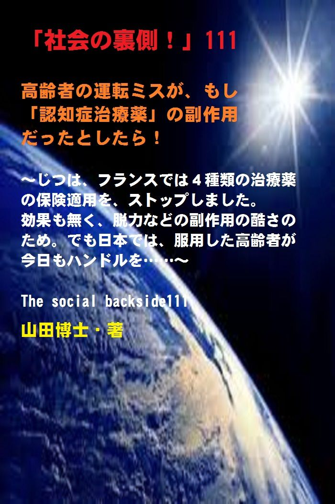

| 「社会の裏側！」111......高齢者の運転ミスが、もし「認知症治療薬」の副作用だったとしたら！: じつは、フランスでは４種類の治療薬の保険適用を、ストップしました。効果も無く、脱力などの副作用の酷さのため。でも日本では、服用した高齢者が今日もハンドルを...... | |
| 山田博士 | |
| kominitesyuppankai (2019) | |

■ 「社会の裏側！ 」 111
高齢者の運転ミスが、もし「認知症治療薬」の副作用だったとしたら！
～じつは、フランスでは４種類の治療薬の保険適用を、ストップしました。効果も無く、脱力などの副作用の酷さのため。でも日本では、服用した高齢者が今日もハンドル を ... ... ～
The social backside111
山田博士・著
★ 本書の著作権について
皆さんにはまったく関係ないことだと思いますが、複写、転送、抜粋、転載など、著作権侵害にあたる行為は絶対になさらないで下さい。本書の著作権は、山田博士にあります。今後、皆さんのお役に立ちたい活動が出来なくなりますので、その点、ぜひよろしくお願いします。ささささ、それでは、本書をどうぞ、ごゆっくりご覧下さい。
★ 概要
高齢者ドライバーの事故。
いま、連日のように、報道されております。
その報道に触れるたび、いたたまれない気持ちになってしまうのは、ぼくだけじゃないでしょう。
その当事者自身の心境。
戦争直後のあの廃墟の中で、鍬（ク ワ ... ... 古いなあ）を握って、この国をここまで立ち上げてきた立役者のかたたち。
今日（こんにち）までには、さまざまな涙もあったでしょう。
辛（つら）いこともあったでしょう。
そうした中で、子どもたちを育て、空を見上げながら自分たちの未来を笑顔で見つめてきた人たち。
いまは高齢者となったその人たちが、ある日突然、その一瞬で、地獄に堕（お）ちてしまうわけですね。
再度、言います。
高齢者ドライバーの事故。
★★★
若者たちは言います。
「だからいまの高齢者たち は ... ... 」
ところが、マスコミだけの報道では窺（うかが）うことのできないような事実が、少しずつ表面化してきました。
それは、こうした高齢者ドライバーの事故の原因が、もしドラッグのせいだったとした ら ... ... という視点なんですね。
いや、けっして「麻薬や覚醒剤」のことではありませ ぬ(笑) 。
同じドラッグでも、「認知症治療薬」という名前のドラッグ。
その、「もの凄い副作用」が、こうした悲惨な交通事故につながっているのかもしれないな。
ぼく は ... ... そう思っております。
★★★
なぜなら、フランスでは２０１８年８月、「４種の認知症治療薬」を、なんと保険適用 外 ... ... に決定したのです。
その理由は、治療薬の効果が無いこと。
それに、その副作用の、ものすごい酷（ひど）さが分かったこと。
本書の中でも、具体的に述べておきましたが、突然、筋力が低下した り ... ... 、大変な事態になったりしてしまいます。
もし、そのとき、ブレーキを踏めますか。
ハンドルを切れますか。
でも、問題なのは、それらが、この日本では今日も平気で服用されているという事実。
そしてその悲しい結果です。
★★★
ぜひ、身近に、とくにクルマを運転なさる高齢者がいらっしゃる場合は、今回の原稿を参考になさって下さい。
いま問題の「認知症治療薬の名前」も、商品名で記載しておきました。
そして、身近のクスリを、ぜひお確かめ下さい。
厚労省の発表によりますと、「認知症高齢者の数」は、２０１２年の時点で、全国に約４６２万人もいらっしゃるとか！
この数字は、６５歳以上の高齢者のうち、なんと５人に１人が認知症に罹患（りかん）するものだと言います。
５人に１ 人 ... ... ですよ！
そして日本では、８５歳以上の人口の、なんと１７％に、この認知症治療薬が処方されていました。
★★★
このようなかたが、いまは普通にハンドルを握っていらっしゃいますが（とくに地方などでは）、ふだん服用しているそのクスリについて、もっともっと調査するべきときじゃないでしょうか。
運転事故は、加害者になっても被害者になっても不幸になります。
しかも、突然。
そして、そのあとの人生は、真っ暗になる。
本書が、少しでも、身の回りにいる高齢者や、ご自分がハンドルを握るときに、お役に立て ば ... ... と念願しております。
ささささ、それじゃ本書をどうぞ。
★ 目次
★ （第１章）
今回述べたいのは、高齢者がいまのような重大な交通事故を頻繁（ひんぱん）に起こしている原因に、じつは「ドラッグ」があるのではないか。いや、けっして「麻薬や覚醒剤」のことではありませ ぬ(笑 )......
★ （第２章）
日本では、８５歳以上の人口の、なんと１７％に、この認知症治療薬が処方されていました。これは、オーストラリアに比べて５倍の多さ。ところが、これらの薬を使って高い効果があった認知症患者の割合は、「４０人に１人」だったと か ...
★ （第３章）
それによりますと、先述した日本名の「アリセプト」などのドネペジル塩酸 塩 ... ... について、多くの副作用報告が寄せられているというわけですね。う～むむむ。多くの副作用報 告 ... ... ね え ......
★ （第４章）
たった、歯を治すだけで、認知症予防にもなりますし、快方への方向に向けることができます。その理由もすべて述べておきました。そして、脳に沈着した、この「アミロイ ドβ 蛋白」こそが、認知症の発症を早めたり、進行させたりするわけなんですね。そして、その予防と、快方への対策 は ......
★ 「社会の裏側！」シリーズの既刊本案内
★ プロフィール
（最初に、恥ずかしながら、ぼくの紹介を簡単に述べておきます）
やまだ・ひろし。
１９４７年、福井県小浜（おばま）市生まれ。
食生態学者。元大学名誉教授。日本危機管理学会会員。
山田博士いのち研究所主宰。
ベトナム戦争の終わったちょうどその年１９７５年に、マンガストーリィと商品の実名で食べものや環境を取り上げた小冊子「暮しの赤信号」を発行する。実名で取り上げたため、社会に衝撃を与えた。各号１０万部単位で読まれ、隠れたベストセラーなどと、新聞などで何度も報道される。
同じ年、偶然にも有吉佐和子さんの「複合汚染」が発表され、この小冊子はその動きも受けて多くの学校の副読本としても活用された。
文化放送の「なっちゃこワイド」や、ＮＨＫ海外放送「ある日本人」でお話しをしたり、ギター弾き語り公演や、各自治体や学校などへの講演なども続けている。
現在は、メルマガ「暮しの赤信号」（「短縮版」と「完全版」の２種）を発行し、企業名や商品名なども公表して、世界中のかたに喜ばれている。
その読者層は、医師や看護師、栄養士、教師、会社経営者、自治体など、国の内外を問わず、多くの読者たちから毎日のように便りが届いている。年齢層も、１０代からかなりの高齢のかたまで、さまざまだ。
このメルマガは、まぐまぐ！を始め３つのスタンドの合計で、７千部発行しているが、もしご関心のあるかたは、ご覧いただくと嬉しい。毎日、早朝５時に届けられる（日曜は除く）。その時刻を楽しみにされている読者も多いとか。
先述したように、メルマガ「暮しの赤信号」には２種類あり、「短縮版」のほうは無料。「完全版」のほうは、山田の思いが１００％掲載されており、社会を見るのに、毎回大いに参考になるだろう。そのほかにもさまざまな特典がある。
「短縮版」については、ご希望のかたには、お送りしてもいい。
■ 毎月第３土曜日に、東京の恵比寿でお茶飲み会「博々亭（ひろびろてい）」を開催。遠路から毎回読者が駆けつけている。参加条件はメルマガ読者に限定。参加費用は無料だ（８月と１２月はお休み）。
■ 著書には、下記のようなものがある。
『脱コンビニ食！』（平凡社新書）
『危険な食品』（宝島社新書）
『その食品はホンモノですか？』（三才ブックス）
『ひとり月１万円食費で幸せ生活』（ＷＡＶＥ出版）
『最新 危ないコンビニ食』（現代書館）
『あぶないコンビニ食』（三一新書）
『続 あぶないコンビニ食』（同）
『外食店健康度ランキング』（同）
『山田博士の暮しの赤信号』第１巻～第５巻（亜紀書房）
『暮しの赤信号』小冊子＆ＣＤ－ＲＯＭ版全２３巻
『月１万少々の食費で、ザクザクと健康を稼ぐぼくの方法』
『いのち運 転" 即実 践" マニュアル』各話
『社会の裏側！』各巻（アマゾン発行の電子書籍）
『セーラー服と警察犬』（小説）各巻
『実話・食卓の事件簿』各 巻 ... ... など。
■ 山田のホームペー ジ → http://yamadainochi.com/
■ 短縮版メルマガ「暮しの赤信号」専用ブログ
→ https://inochimamorutameni.hateblo.jp/
■ 短縮版メルマガ「暮しの赤信号」登録（無料）
→ http://goo.gl/AFx95J
★ はじめ に ......
こんにちは。
山田博士（やまだ・ひろし）です。
本書をご覧いただき、嬉しく思っております。
この内容をご覧いただくことで、少しでもあなたが「社会の裏側！」の流れにお気づきになり、そしてたとえ１ミリでもいい、即、行動されることを願っております。
ただ読むだけでは、誰でもできます。
それでは、あなたの身の回りの状況は石のように動きません。
本書をご覧になって、これ は ... ... と思うことがあれば、即行動なさって下さい。
お願いします。
その小さな行動の積み重ねこそが、あなたの明日を、１２色のバラ色で輝かせることになると信じております。
なお、この「社会の裏側！」は、今後もシリーズとして発刊して行くつもりです。
もしご関心があれば、「社会の裏側！」という名前で、アマゾンで検索してお調べ下さい。
さまざまな問題の社会の裏側！を詳しく、しかも楽しく述べております。
ぼくの名前で検索されても、見つかるのではないかと思います。
もし、「ＰＤＦ版」でご希望の場合は、ぼくの事務局まで遠慮なくお問い合わせ下さい。事務 局→ http://goo.gl/t12Yx
ささささ、能書きはそこまでにします。
どうぞ、笑顔で、頁をお繰（く）り下さい。
お楽しみに！
★ （第１章）
今回述べたいのは、高齢者がいまのような重大な交通事故を頻繁（ひんぱん）に起こしている原因に、じつは「ドラッグ」があるのではないか。いや、けっして「麻薬や覚醒剤」のことではありませ ぬ(笑 )......
高齢者ドライバーの事故。
いま、連日のように、報道されております。
その報道に触れるたび、いたたまれない気持ちになってしまうのは、ぼくだけじゃないでしょう。
その当事者自身の心境。
そして、加害者であれ、被害者であれ、いずれもの人たちが背負う、今後一生続くであろう悲しみ。
それらは、非常に辛（つら）くて、重いものです。
いつ誰だって、自分がその加害者になるかもしれないし、被害者になるかもしれない。
もちろん、こうした高齢者の事故は、いまに始まったことでもなく、若者たちの事故の割合などと比較すれば、絶対数としては、そう悲観した問題ではないのかもしれません。
ただ、こうした突然の事故で、戦後一所懸命にこの社会を作りあげてきた高齢者たちが、突然、この世を去らねばならないことを思いますと、その事故に関連した全員が「不幸になる」こと は ... ... 確か。
生き残るのも地獄、一生障害を負ったり、亡くなるのも地 獄 ... ... 。
だけど、こうしたクルマ社会のその陰で、誰かが知らん顔をしながら利益を得ているのも事実なんですね。
そして、高齢者の事故対策を、「個人にだけ転嫁（てんか）」させてしまっている社会。
その裏にいるのが政府であったり、自治体であったり、企業であったりと、その顔はさまざまなのですが、そういうことも含めて大きな枠（わく）の中で物事を見つめないと、どんなことも全面的な解決は不可能です。
「またまた高齢者の事故が起こったんだ。だから高齢者の運転 は ... ... 」
としか言えないほど、ぼくたちは、なんでも非常に短絡的にとらえてしまいます。
若い人たちは誰も、自分が高齢者になったときのことなどまるで想像もできません。
そのため、みんな勝手なことを叫んでいます。
そういう意味では若い人ほど、残酷なんですね。
自分に体力があるため、体力の無い人の悲しみが共有できない。
自分の体力や「脳力」が衰えなければ分からないことなんて、社会には山ほどあります。
でも、それを「なんとか想像する」ことのできるのが本当の人間なのでしょうね。
そして、優しさなのでしょうね。
高齢になれば、視覚も聴覚（ちょうかく）も嗅覚（きゅうかく）も、そして脳力も足腰も、みんな衰えます。
ぼくたちは生物（せいぶつ）ですから、どんな屈強な人でも、いつまでも同じということはあり得ません。
みんな全員 が ... ... 衰えます。
そんなことは、いわば自然の成り行きなんですね。
でも、若者たちには、それが分からない。
いまの自分の体力のままで年を取ると思っている。
いつまでも、自分の肌は柔らかいと思っている。
だけど、いまの時代、交通網が発達しているようでも、年を取れば、すぐ動くにはなかなか難しいところがあります。
家を出れば、目の前にエスカレーターがベルトコンベアのように動いているのならそれでいいですが、でも、もしそうであっても、荷物を運んだり、雨だったりすれば、それも意味がありません。
どういう時代になっても、自分という「１個の体」を物理的に移動させるには、何かの移動手段が必要です。
そのために、社会的な交通網や自転車、クルマなどが必要になるわけですね。
でも、そうしたインフラ（道路や通信などの公共施設のこと）は、なかなか完備されないのが、現実。
すべてがオカネですから。
役所は予算がない、企業は余力がな い ... ... なんて、自己防衛で、いつも叫ぶわけです。
そこで、個人的にはクル マ ... ... となるわけですね。
だから高齢者にとっては、すぐ近くのコンビニに行くのも、クルマ。
スーパーへの買い物も、クルマ。
町の自治会館へ行くのも、クルマ。
そうなるのは、いまのような社会では、ある意味仕方がないのかもしれません。
とくに高齢者にとっては、なにしろ歩道は歩きにくい。
なにしろ左右が水平じゃないわけですから。
どんな場合でもクルマが最優先になっていていて、駐車場から出るクルマのために、わざわざ（クルマのほうの）段差を無くしている。
そのため、歩行者は、この斜面を横滑りしながら「オヨヨ ヨ ... ... 」と、歩くことになります。
こんな歩道を、杖（つえ）をついたり車イスなどで、スムーズに移動などできますか。
もしぼくだったら、きっと「こんな歩道、もう歩くの、止～め た ... ... 」なんて叫ぶでしょうね。
車道のほうが水平で、水たまりもなく、「歩きやすい」。
ぼくは、よく、車道を動いている「電動クルマイス」を見ることがあります。
歩道はさまざまな段差があり、スムースに走れないからなんでしょうね。
あれほど、危ないことって、ありますか。
生身（なまみ）のクルマイスのすぐ横を、猛スピードで走り抜けるクルマたち。
ぼくが議員であれば、一番先に、こうした歩道を歩行者優先に変更します。
いまのようなクルマ優先の町には「絶対に」しません。
そうなれば、高齢者も、クルマなど使わなくなるはず。
でもいまの社会は、一歩外に出れば、とにかく危ない。
一人で外を歩けないんですね。
だから、「安全のために」クルマを使 う ... ... 。
なのに、そうしたインフラを改善することはしないで、高齢者から免許を取り上げろ。
何歳になったら、自分で免許を返上し ろ ... ... という若いヤツらの声ばかりがネットでは広がっています。
けしから ん ... ... じゃないですか。
そのとき喜んでいるのは、インフラにお金をかけたくない政府や自治体の連中ばかり。
... ... まあでも、そういうことは、今回、「横に置いて」おきま す( えっ と ... ... けっして忘れたわけじゃありませんので。 笑) 。
今回述べたいのは、高齢者がいまのような重大な交通事故を頻繁（ひんぱん）に起こしている原因に、じつは「ドラッグ」があるのではないか。
いや、けっして「麻薬や覚醒剤」のことではありませ ぬ(笑) 。
同じドラッグでも、「認知 症 ● ● 薬」という名前のドラッグ （ ● ● は、下記の設問をご覧下さい）。
その服用が、悲惨な交通事故につながっているのかもしれないな。
ぼく は ... ... そう思っております。
ぜひ、身近に、とくにクルマを運転なさる高齢者がいらっしゃる場合は、今回の原稿を参考になさって下さい。
「認知症治療薬の名前」も記載しておきました。
身近のクスリを、ぜひお確かめ下さい。
つま り ... ... 。
★ （第２章）
日本では、８５歳以上の人口の、なんと１７％に、この認知症治療薬が処方されていました。これは、オーストラリアに比べて５倍の多さ。ところが、これらの薬を使って高い効果があった認知症患者の割合は、「４０人に１人」だったと か ......
厚労省の発表によりますと、「認知症高齢者の数」は、２０１２年の時点で、全国に約４６２万人もいらっしゃるとか！
４ 百 ... ... ６ 十 ... ... ２ 万 ... ... 人！
いやあ、凄（すご）い数ですなあ。
ところが、２０２５年になると、その数は７００万人を超えると推計されているじゃありませんか。
もう冗談じゃなく、凄（すさ）まじい社会がすぐにやって来ようとしています。
この数字は、６５歳以上の高齢者のうち、なんと５人に１人が認知症に罹患（りかん）するものだと言います。
５人に１ 人 ... ... ですよ！
右を見ても左を見ても、みんな、みんな、認知症。
皆さん、ごいっしょに肩を組んで歩きましょ う ... ... なんて、呑気（のんき）に言っている場合じゃありません。
ところが、この認知症への「治療薬」が、問題だっ た ... ... 。
ぼくは、こうした治療薬の副作用が、運転している高齢者たちを突然襲ったのではないか、と推測しています。
まあ、それらについては、追々（おいおい） と ... ... 。
日本では、８５歳以上の人口の、なんと１７％に、この認知症治療薬が処方されていました。
これは、「医療経済研究機構」のチームが、全国の医療機関のレセプト（診療報酬明細書）データなどを基（もと）に調べたものなんです。
これは、オーストラリアに比べて５倍の多さ。
こうした量も、ぼくは大いに問題にすべきだと思っております。
製薬メーカーや、「御用専門家たち」の言うがままに、患者のその後の観察などもせず、ただ治療薬を多量に服用させる。
ところが、こうした治療薬で、凄（すさ）まじい副作用が起こることがこのほど分かりました。
そのためもあり、フランスでは２０１８年８月、「４種の認知症治療薬」を、なんと保険適用 外 ... ... に決定したのです。
でも、問題なのは、それらが、この日本では今日も平気で服用されているという事実。
そしてその悲しい現実。
それらが、このごろ頻繁に起こっている高齢者の重大な運転事故につながっていなければいいのにと、ぼくは思っております。
加害者も被害者も、両方不幸にする運転事故。
いったい、その４種とは何なのか。
下記では、「日本で処方されている名前」で述べています。
もし、いま手元にあれば、ぜひご覧下さい。
それ は ... ... 。
フランスの「連帯・保健省」の発表によりますと、その対象 は ... ... 。
ドネペジル（日本での商品名アリセプト）、
ガランタミン（同レミニール）、
リバスチグミン（同イクセロン、リバスタッチ）、
メマンチン（同メマリー）、
... ... です。
これらは、アルツハイマー型認知症の治療薬として、薬剤費の１５％が保険で支払われていたのですが、２０１８年８月から、「全額が自己負担」となりました。
いったい、何が起こったのでしょう。
興味がありませんか。
もし、この治療薬が認知症に効果があるのなら、こんなことするはずがないですよね。
たとえフランスであって も ...... ( すみません、フランスさん。 笑) 。
なぜ保険が利（き）かなくなったのか。
フランスも、日本と同様に、「公的医療保険制度」が行き渡っている国です。
そのため、患者は低い自己負担で医療を受けることができますが、ただ日本との違いは、薬の内容によって患者の負担割合が異なることでしょうね。
日本だと、医薬品として承認されると、患者は原則として一律３割負担となりますよね（一部除く）。
でもフランスでは、薬を重要度によって「主要」から「（有用性が）不十分」ま で ... ... ５段階に分類しているんです。
つまり、患者の自己負担割合に、「０％から１００％まで」差をつけているわけですね。
もし最重要の「主要」に分類され、しかも高額で不可欠な薬であるなら、患者は自己負担なしで使えます。
いやあ、フランス人たちは、いいですな あ ... ... 。
ところが、もし「不十分」だとなれば、保険が使えず全額自己負担になるという塩梅（あんばい）。
そのためもあり、いままでは、このアルツハイマー型認知症の治療薬については、薬剤費の１５％が保険で支払われていたのです。
まあ、ある程度効果があ る ... ... と判断したのでしょう。
ところが、先述したように、今回、「全額が自己負担」となった。
つまり、この認知症治療薬がほとんど「効果がない」ということの証明じゃありませんか。
違いますか。
もしそうでなければ、フランスでは「暴動」が起こっているはず（先日、何度か暴動が起こっていたようですが、あれは、どうも「認知症」とは関係ないようでした が ... ... 笑）。
フランスでは、これまで、これらの認知症治療薬の有用性の評価が、２度にわたって引き下げられてきたんですね。
そして２０１６年、とうとう最も低い「不十分」となったのですが、今回、それ以上に、「保険の対象外」になったというわけです。
もちろん、薬の承認が取り消されたわけではありませんが、もし使う場合は「全額自己負担して下さいね」となったわけです。
日本でも、専門家たちの実感としては、これらの認知症治療が効果がある患者は、おそらく１割～２割だろ う ... ... と言っているようですよ（出所：「読売新聞」 、 201 8年 1 0月 1 6 日）。
１割～２ 割 ... ... 。
それじゃ、いったい、何のために、そして「誰のために」、この「認知症治療薬」が提供されているわけです？
そして一番の問題は、この治療薬の「副作用」なんですね。
これこそが、先述したように、最近頻繁に報道される高齢者の交通事故の原因じゃないのか。
ぼくはそう思っております。
もちろん、認知症治療薬をのまずとも、高齢になれば、身体的な動作が鈍くなるのは当然です。
でも、それに輪を掛けて、この認知症治療薬の副作用があるとしたら、それは大変なことです。
本人も、大慌てになることでしょう。
そのため、ぼくは高齢者のためにも、とても平静ではおれないわけですね。
同出所によりますと、兵庫県立「ひょうごこころの医療センター」の小田陽彦認知症疾患医療センター長が、こうした認知症治療薬の有効性を調べた結果があります。
それによりますと、国内外の臨床（りんしょう）試験結果を総合的に分析した結果らしいですが、薬を使って高い効果があった認知症患者の割合は、「４０人あたりわずか１人 」 ... ... だったと。
多少効果が見られた患者でも、「７人に１人程度」にとどまったようですね。
先述した「効果がある患者は１～２割 」 ... ... という専門医の実感とも合致（がっち）しています。
まあ、そのような程度が、この認知症治療薬の存在意義なのでしょうか。
ところで、肝腎（かんじん）のその副作用なんです が ... ... 。
それがまた凄（すご） い ... ... 。
★ （第３章）
それによりますと、先述した日本名の「アリセプト」などのドネペジル塩酸 塩 ... ... について、多くの副作用報告が寄せられているというわけですね。う～むむむ。多くの副作用報 告 ... ... ね え ......
この認知症治療薬による副作用などですが、ある一つの調査があります。
全日本民医連が、加盟する約６５０の医療機関や３５０の保険薬局からのデータなどを駆使（くし）して、医薬品の副作用モニターや新薬評価を４０年ほど前から行っています。
それによりますと、先述した日本名の「アリセプト」などのドネペジル塩酸 塩 ... ... について、多くの副作用報告が寄せられているというわけですね。
う～むむむ。
多くの副作用報 告 ... ... ねえ。
たとえば、消化器系症状の嘔気（おうき）や嘔吐（おうと）などは、投与開始直後や 、 3m g か ら 5m g に増量した時に発生しているようですね。
まだ体が、その治療薬に慣れていないのでしょうか。
また、循環器（じゅんかんき）系症状としては、不整脈（ふせいみゃく）や徐脈（じょみゃく。脈が遅くなること）などの報告があります。
これは、先ほど述べました「ドネペジル塩酸塩」のアセチルコリン作用によって、迷走神経が刺激されるからなんでしょうね。
そのために、徐脈や不整脈を起こすのでしょう。
もし、ハンドルを握っているときに、こうした副作用が本人に突然起こったら、どうすればいいのでしょう。
その運転者が死亡してしまった場合など、その事故原因が分からずじまいで終わってしまいますよね。
すると、今後に生かすことが不可能になってしまいます。
副作用は、本人しか分からないわけです し ... ... 。
それに、精神神経系では、易怒性（いどせい。怒りっぽくなること）や、攻撃性、暴言、興奮などの症状も、報告されているようですね。
本来、この薬品は 、 AT D （アルツハイマー型認知症）の中核症状を改善するものなのでしょうが、周辺症状に対しては「興奮系薬物」として働く場合があるようです。
そして、こうした症状が発現するまでの期間はさまざま。
投与開始後２週間以内に異常行動が起きた症例では、強い易怒性などが起きたという文献報告もあります。
とにかく、副作用が凄（すさ）まじい。
ほかにもいくつ か ... ... 。
〔症例１〕
幻覚症状（グレー ド2 。普通段階）。
アルツハイマー （ A D ）と診断され、ドネピジル塩酸 塩 3m g 開始（併用薬は抗うつ薬、ベンゾジアゼピン系薬、降圧薬など）。
１４日間服用し 、 5m g に増量し た3 日後、幻覚が出現、服用中止になった。
〔症 例2 〕
興奮（グレー ド2） 8 0 代女性。
物忘れが多くなりドネペジル塩酸 塩 2.5m g 開始。
２～３日で興奮・妄想・攻撃性が出てくる。
とても激しく人が変わったようになり１０日後中止。
中止後１週間程度で落ち着く。
〔症 例3 〕
口唇（こうしん）のふるえ（グレー ド2 ）。
糖尿病、パ－キンソン症候群、うつ病などを治療中の患者に、アルツハイマーのためドネペジル塩酸 塩3 ｍｇ開始。
5 ｍｇに増量した約３週間後に口唇のふるえが見られ、ふるえを止め るβ ブロッカー治療を試みるが効果なく中止。
１カ月後に症状は消失した。
〔症 例4 〕
徐脈（グレー ド2 ） 。 8 0 代男 性 30k g 。
もともと心拍数 （ H R） 50-8 0 で推移。
ドネペジル塩酸 塩 1.5m g で開始。
２日後 心拍数 （ H R） 4 0 、５日後完全房室ブロックを疑い中止。
中止後４日、心拍数 （ H R） 7 2 となる。
まあ、じつに、副作用の激しい治療薬なんですね。
いわば、命がけの治療薬です。
こうした副作用を整理しますと、下記のようになるでしょうか（出所：「読売新聞 」 201 6年 1 1月 1 8 日、木之下徹の認知症とともにより良く生き る ... ... を参考に、山田が加筆しました）。
★ 認知症治療薬の副作用には、こんなものがあります。
（１）脈（みゃく）の動きを遅くします。
（２）気管支（きかんし）を狭（せば）めます。
そのため、 喘息（ぜんそく）がある人は注意が必要でしょうね。
（３）下痢になったりしますので、ふだん便秘気味の人で下剤を服用している人は、それが少なくなるかも。
（４）それに、食欲不振。これは、胃腸の働きを活発にしすぎた結果かもしれません。
でも、食べたものを吐（は）いてしまうことも。
（５）筋力（きんりょく）の脱力があります。
力が入らなくなったり、逆に、過度な筋肉の緊張があって、動くと痛みが伴ったりします。
これなど、もし運転中に起こったら、アクセルやブレーキも操作できなくなるのではないですか。
（６）横紋筋融解症（おうもんきんゆうかいしょう）なる症状が起こったりしますが、これは、大変な騒ぎになります。
救急搬送が必要になったりしますので、受け入れる病院でも大慌てとなりますからね。
ちなみに、この症状は、重症の場合には腎機能の低下を生じます。
そして、腎不全によって誘発される臓器機能不全を発症しますと、死に至る場合もあるほどの病気です。
（７）そのほかとしては、これはまあほかのクスリにもありますが、皮膚に湿疹（しっしん）のようなものが全身に広がったりします。入院治療が必要になる場合も。
もっとほかにもあるかもしれませんが、このような副作用が起こることだけは、いつも念頭に置いて、治療薬と接して下さい。
そして、治療薬では、認知症はけっして治るわけじゃないんだということを、家族も本人も早めに自覚することです。
認知症という症状が起こったのは、「過去の自分の人生の集大成」だから、なんですね。
いま、どのように叫ぼうとも、昔には戻れません。
そのため、とにかく、いまの症状以上には悪化させないこと。
そして、いまからでも遅くはありませんから、次の章で述べる暮らしを、少しでも続けることです。
もしそうすれば、ひょっとして、快方に向かうようになるかもしれませんが、あまり期待はできません。
だって、いままで、そういう情報に触れたはずなのに、それを無視して生きたこられたわけですからね。
いまになって、それが可能だとは、とても考えにく い(笑) 。
でも、それでも試（ため）してみるというかただけ、次の章をご覧下さい。
ただ、治療薬も、確かに副作用は怖いですが、それでも医療者によっては、その量や患者の様子を見ながら、処方してくれるところもあります。
治療薬の場合は、絶対に自分で判断せず、ちょっとしたことでも必ず医療者と相談して下さい。
それが一番です。
たとえば、医療者によっては、たとえばこの「アリセプト」を処方した場合でも、その服薬１日目や３日目や７日目ぐらいに患者に電話をしたりして、様子を見るところもあります。
それによって、処方量を ５ m g に増やすとか、さまざまなことをしてくれるところもあります。
処方して、あとは知らんぷ り ... ... というところは、ちょっとね え ...... (笑) 。
そのため、こうしたクスリが何のために世の中に存在するのかということなどを、いつも考えて服用されるといいでしょうね。
たとえ副作用を受けても、のみ続けたいとか、緊急のときだけにするとか、自分で少しでも認知症を治す努力をするとか。
緊急の場合などは、やはり西洋薬は必要ですので、そうしたさまざまな要素を考えて、今後もクスリに向き合っていただければなと思っています。
さあ、次章では、いまからでもけっして遅くはないと自分で信じているかたに、少しでも認知症を快方できる方法を述べたいと思います。
★ （第４章）
たった、歯を治すだけで、認知症予防にもなりますし、快方への方向に向けることができます。その理由もすべて述べておきました。そして、脳に沈着した、この「アミロイ ドβ 蛋白」こそが、認知症の発症を早めたり、進行させたりするわけなんですね。そして、その予防と、快方への対策 は ......
さてっ と ... ... 。
認知症には、治（なお）せるものと、治せないものがあります。
... ... なんて聞かされると、驚かれるでしょうが、なんのことはない、まあ、たいしたことはありませ ん(笑) 。
つまり、治せる認知症というものは、慢性硬膜下血腫（まんせいこうまくかけっしゅ）、正常圧水頭症（せいじょうあつすいとうしょう）、薬物性認知症、甲状腺（こうじょうせん）機能低 下 ... ... などです。
これらは、手遅れにならないうちに診断がついて、もしタイミングさえよければ、治療することで治せます。
だって、慢性硬膜下血腫や正常圧水頭症などは、脳外科（のうげか）手術がありますし、そのほかのものは、いま使っているクスリの服用を停止すればい い(笑) 。
まあ、そうですよね。
でも、もう一つの治せない認知症は、やはり治せない。
そう、治せない認知症。
以前にも少し述べたと思いますが、この認知症にも、さまざまな種類があるんですね。
一番多いのが、「アルツハイマー型認知症」と、「脳血管性認知症」。
その中でも、ぼくたちがふだん言う認知症の中で一番多いのが、じつは「アルツハイマー型認知症」なんですね。
全体の半分以上が、これです。
「脳血管性認知症」のほうは、治療や予防法によって有症率が減少傾向にあると言われているのですが、この「アルツハイマー型認知症」のほうだけは、逆に有症率がグングンと「増加傾向」にあるんです。
いったい、何が原因なのか。
この日本では、現在、「６５歳以上の約１０％が、認知症」と言われておりますが、さらに説明しますと、「７０歳」がある境界線になっているんですね。
７０歳を超えますと、年を取るごとにぐんぐん増加します。
なんか、嫌（いや）ですね え ...... (笑) 。
そして、８５歳になりますと、その有症率が２７％にも！
なんと、「３人に１人 」 ... ... という塩梅（あんばい）になるわけです。
いったい、何が原因なのか。
どう思いますか。
いままでは、糖尿病や高血圧といった「生活習慣病」が、とくに「アルツハイマー型認知症」の発症と関連があるということが、さまざまな方面で科学的に証明されてきました。
もちろんぼくも、過去、糖尿病と認知症との関連などについて、何度か述べてきたつもりです。
そのため、当然、それらの症状も、認知症とは深い関係はあります。
それらを抜きにして、認知症を防ぐことは、とてもできません。
ところが、この数年、それとは別に、認知症の原因として、「トンデモナイこと」が、だんだんと分かってきたんですね。
それ は ... ... 。
そう、それは「歯」との関連なんです。
たとえば、「歯周病（ししゅうびょう）」とか「虫歯」とか。
これらについては、じつはほかの電子書籍「社会の裏側！」第９６巻で、述べました。
そのため、詳しくは、ぜひ、そちらをご覧下さい。
そのタイトルは、下記のとおりです。
★ 「社会の裏側！」９ ６ ... ... たった１本の歯が、認知症の一大原因だった！
案内 頁→ https://bit.ly/2Om9ZNf
たった、歯を治すだけで、認知症予防にもなりますし、快方への方向に向けることができます。
その理由もすべて述べておきました。
いま、こうして解決策が分かってきていることは、少しでも実践されるといいと思いますよ。
病院へ行っても、「あなたねえ。歯周病を早く治しなさ い ... ... 」なんて、誰も言ってはくれませ ん(笑) 。
詳しくは、上記の内容をご覧いただくといいのですが、もし、あなたが「歯周病」にかかるとします。
すると、「エンドトキシン」という毒素が血流にのって全身を駆け巡（めぐ）るわけなんですね。
そう、全身 を ... ... です。
ちなみに、この「エンドトキシン」とは、ボツリヌス菌などが出す菌体外毒素とは異なって、たとえば赤痢菌やコレラ菌などのように、細菌の「細胞内に保有されている毒素」なんです。
だから、菌体外に分泌（ぶんぴつ）されることがありません。
その菌体の破壊によって、初めて外へ飛び出してくる毒素なんですね。
そのため、「内毒素」、あるいは「エンドトキシン」と、一般には呼ばれております。
この「内毒素」は、やがて脳に達します。
すると、「サイトカイン（小さなタンパク質）」などの炎症性物質が増えるのですが、その「サイトカイン」が、「アミロイ ドβ 蛋白」というトンデモナイ物質を増やすという寸法なんですね。
そして、脳に沈着した、この「アミロイ ドβ 蛋白」こそが、認知症の発症を早めたり、進行させたりする。
いやあ、この「アミロイ ドβ 蛋白」恐るべ し ... ... ということですね。
えっ と ... ... お分かりです か(笑) 。
歯周病が、認知症の原因だっ た ... ... なんて、誰が言いますか。
ぼくたちの体は、すべてが有機的につながっております。
認知症だからと言って、脳だけを見ていても、とても解決しないんですね。
いつも「体全体」を見る必要がある。
まあ、そういうことを最初に述べた上で、認知症の予防と対策について、下記で少し述べておきます。
紙幅（しふく）がだいぶ少なくなりましたので、簡単に述べておきますが、下記をぜひ参考になさって下さい。
１．当然ですが、生活習慣病を、ふだんから防ぐ食事を心がけること。
なぜなら、認知症は糖尿病や脳血管障害から関連することが多いからです。
そして、いつも植物油などを体に取り込んでいれば、いざというときに免疫も弱くなり、血管が酸化（老化）して役に立たなくなります。
低糖で低塩にし、日本人の食べてきたものをバランスよく取り込むことでしょうね。
まあ、いまさら、詳しくは述べません が ...... (笑) 。
２．それと運動はいまさらですが、大切です。
だって、体を動かせば、脳が刺激されますしね。
それに、運動不足で足腰が弱っていますと、生活の幅が縮まります。
社会との交流もできなくなります。
３．他人との交流をいつも考えること。
そして、自分の好きなことをしながら、それが社会にどのように役立つか、いつも考えることです。
いつも自分の人生しか考えていないようでは、必ず認知症になります よ(笑) 。
社会を良くすることだけをいつも考えていれば、認知症などで倒れるわけにはいきません。
まあ、これらについての詳しくは、ほかの本でも述べておりますので、今回はこれぐらいにしておきます。
ただ、先述したように、ぜひ「歯周病」だけは早めに治癒するようになさって下さい。
たったこれだけでも、かなり認知症予防に役立つと思いますよ。
さささささ、それではぼくも、「認知症予防」のために睡眠不足も行けないでしょうから、いつまでも机に向かっていないで、ここらで、もう寝ることにします。
お ... ... やす み ... ... なさい。
ハハ ハ ... ... 。それじゃまた次回ね。ご機嫌よう。（山田博士）
▼ 設問で す ▼
設 問→ 上記の文章を読み、下記 の ● ● にあてはまるものを、選択語句から選んでみよ。ただし２文字とは限らない。
「同じドラッグでも、『認知 症 ● ● 薬』という名前のドラッグ」
【選択語 句→ 治療、予防、市販】
■ 答 え ■
下記のとおりです。でも、先に答えを見てはいけません。本文を再度ご覧になり、十分想像してから答えをご覧下さい。その繰り返しが、あなたの明日を輝かせることになると思っています。
答 え→ 治療
（了）
★ （最後にひとこと）
ここまでお読みになって下さり、ありがとうございました。
ここで述べているような内容の最新情報を、メルマガ「暮しの赤信号」では述べております。
企業名や商品名も公表していますので、もしご関心のあるかたは、下記から登録されれば、毎回、自動的にお送りします。
「短縮版」は無料です。
毎回、早朝５時に、あなたのところへ配信します。
現在、全世界で数千部を配信しておりますが、楽しい文体が人気のようですよ。早朝５時をお待ちになっているかた も ... ... 。
その日から役立つ内容です。
「短縮版」（無料です ）→ http://goo.gl/AFx95J
メルマガ上で、また、お逢いしましょう！
★ ★ 「社会の裏側！」シリーズの既刊本案内
「電子版」と「ＰＤＦ版」があります。お好みのほうで、どうぞ。
これだけたくさん、マスコミも言わない内容が、存在します。ご関心のあるものから、ご覧下さい。すべて短文で、サクッと、いまの社会の真実が読めます。
下記の「検索欄」に、いまご関心のあるキィワードを入れてみて下さい。きっと、ヒットすると思います。
【全巻案内専用ブログ 】 → https://syakainouragawa234.blogspot.com/
★ 価格は、現在、５８５円です。各巻の専用頁からお求め下さい。
★ 「ＰＤＦ版」は、下記のフォームからどうぞ
→ https://goo.gl/GPFu2B
価格は「電子版」と同じにしています。ただ当方の人手の問題で、できれば「電子版」をお求め下さると嬉しい。でも、どうしてもの場合は、ぜひご連絡下さい。
「ＰＤＦ版」の場合、巻数が多くなれば、かなりの割引にしていますが、上記のフォームからの「自動返信」でご確認下さい。
★
★
★
■ 「社会の裏側！」 １ ... ... 子宮頸ガンワクチンで女子中高生が泣いている！ → https://goo.gl/BMwQTm
■ 「社会の裏側！」 ２ ... ... ペットボトルを「ペット」にしてはいけない。新生児の男女比が驚くことになっている！
→ https://goo.gl/QuFsYz
■ 「社会の裏側！」 ３ ... ... 牛丼店「すき家」が、従業員を貧困のどん底に！ → https://goo.gl/YrmzNf
■ 「社会の裏側！」 ４ ... ... 小学校の低学年児に「向精神薬」を処方する医師たち！ → https://goo.gl/L97NJu
■ 「社会の裏側！」 ５ ... ... 映画「世界が食べられなくなる日」。原子力、「遺組み」の現実！ → https://goo.gl/7HwZ38
■ 「社会の裏側！」 ６ ... ... 蚊帳（かや）に練り込まれた「毒物」ってご存じでした？ → https://bit.ly/2Pa3HWn
■ 「社会の裏側！」 ７ ... ... あなたは、放射性物質が濃縮された「エコセメント」で住宅を建てますか？ → https://goo.gl/UbkdH4
■ 「社会の裏側！」 ８ ... ... いまや加工食品の甘味のほとんどは「異性化糖」だ！遺伝子組み換えコーンによるこの甘味料が日本人を壊す
→ https://goo.gl/6FNSeG
■ 「社会の裏側！」 ９ ... ... ＬＥＤ照明の「人体実験国」ニッポン！
→ https://goo.gl/VQWQam
■ 「社会の裏側！」１ ０ ... ... コーラの着色料に「発ガン性」の疑惑が出た！ → https://goo.gl/XvNdfn
■ 「社会の裏側！」１ １ ... ... 「香料」のせいで死ぬ思いの人たちへ！日本人の母乳や脂肪から初めて検出された「人工のムスク」
→ https://goo.gl/UcZRzf
■ 「社会の裏側！」１ ２ ... ... 子どもの「健康格差」が凄まじい！なんと「就学援助」の小中学生が１４２万人になった
→ https://goo.gl/nGhdnC
【以下、途中は省略しています】
全巻案内専用ブロ グ → https://syakainouragawa234.blogspot.com/
■ 「社会の裏側！」９ ８ ... ... ２週に１度頻発している「介護殺人」で、主役にならぬ方法！ → https://bit.ly/2Jgz9u2
■ 「社会の裏側！」９ ９ ... ... 「生理用の紙ナプキン」が、女性たちを泣かせている！ → https://bit.ly/2NhSlKr
■ 「社会の裏側！ 」 100... ... 「イチゴ」は食べてはいけない！日本農産物「安全神話」の崩壊をどう防ぐか ！ → http://tiny.cc/hztnwy
■ 「社会の裏側！ 」 101... ... 子を捨てる親たちよ！ なぜ君たちは「養子縁組」の選択肢を持たないのだ！ → https://bit.ly/2zRhzer
■ 「社会の裏側！ 」 102... ... 「ファクトリー・ファーミング（工場式畜産）」が、抗生物質の効かない体を作っていた！
→ https://bit.ly/2P5Yw5f
■ 「社会の裏側！ 」 103... ... 「パン食」が、日本人の心と体を壊（こわ）している！ → https://bit.ly/2NupNkw
■ 「社会の裏側！ 」 104... ... 漫画家さくらももこさんの「乳ガン死」で思うこと。最近、この症状が女性に急増しているのはなぜなのだろう！ → https://bit.ly/2Mqim9B
■ 「社会の裏側！ 」 105... ... 日本人は、昔から「エシカル・コンシューマー」だった。なのに、なぜいま、あえて逆方向に向かうのだろう！
→ https://bit.ly/2JiwnGi
■ 「社会の裏側！ 」 106... ... なぜ、小児甲状腺ガンが、福島「県外」の人に深刻なのだろう！
→ https://bit.ly/2ENHEQw
■ 「社会の裏側！ 」 107... ... バイクで生徒が廊下を走り回る中学校を、「非行ゼロ」にさせたのは、なんと「完全米飯給食」だった！
→ https://bit.ly/2Sh0Pob
■ 「社会の裏側！ 」 108... ... 「黄砂」に、放射性物質がたっぷり含まれていることをご存じか！
→ https://bit.ly/2XfzTrP
■ 「社会の裏側！ 」 109... ... 「児童相談所」が、虐待される子どもを絶対に救えない闇の構造！
→ https://bit.ly/2GC3g03
■ 「社会の裏側！ 」 110... ... 「プラスチックで味付けられた魚」、あなた、食べたいですか！
★ 「ＰＤＦ版」の場合は、下記のフォームからご連絡下さい。巻数が多くなれば、かなりの割引にしていますので、お楽しみに！
→ https://goo.gl/GPFu2B
★ 奥付
「社会の裏側！ 」 111
高齢者の運転ミスが、もし「認知症治療薬」の副作用だったとしたら！
～じつは、フランスでは４種類の治療薬の保険適用を、ストップしました。効果も無く、脱力などの副作用の酷さのため。でも日本では、服用した高齢者が今日もハンドル を ... ... ～
The social backside111
山田博士・著
第１刷発行日 ： 2019/07/05
－－－－－－－－－－－－－－－－－－－－－－－－－－－－－－
山田博士／著
発行／こみにて出版会
105-000 1 東京都港区虎ノ門２－２－５共同通信会館Ｂ１Ｆ
メインホームペー ジ → http://yamadainochi.com/
短縮版メルマガ「暮しの赤信号」専用ブログ
→ https://inochimamorutameni.hateblo.jp/
事務局へのフォー ム → http://goo.gl/t12Yx
－－－－－－－－－－－－－－－－－－－－－－－－－－－－－－